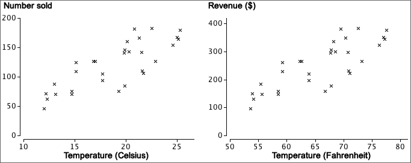

Units and strength of a relationship
A numerical summary of the strength of the relationship between two variables should not depend on the units in which we measure the two variables. The strength of the two relationships between Sales (of ice cream) and Temperature are the same in both of the scatterplots below.

We therefore start by defining units-free versions of the two variables and will summarise the strength of the relationship in terms of them.